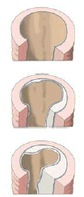

Bluthochdruck
Einteilung der Blutdruckwerte in Ruhe
(oberer Wert = systolisch / unterer Wert = diastolisch) in mmHg:
| Normal: |
< 130/85 |
| Hochnormal |
< 140/90 |
| Bluthochdruck |
> 140/90,
bei wiederholter Messung |
Warum Millionen Menschen in Deutschland an Bluthochdruck
leiden, ist in 95% der Fälle unbekannt, man spricht von einem
so genannten essentiellen arteriellen Hypertonus.
- Bluthochdruck ist einer der wichtigsten Risikofaktoren für
Herzinfarkt, Schlaganfall und den so genannten plötzlichen
Herztod.
- Bluthochdruck überlastet das Herz, das sich auf Dauer krankhaft
vergrößert und an Pumpfunktion einbüßt.
- Bluthochdruck verursacht durch Verkalkung der Blutgefäße
(Arteriosklerose) eine Verengung der Arterien nicht nur des Herzens,
sondern der Arterien des gesamten Körpers. So schädigt
Bluthochdruck außerdem insbesondere die Nieren und die Augen.

Am Ende dieser Entwicklung steht der Gefäßverschluss.